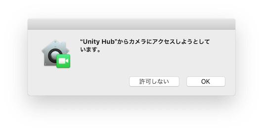

mac版 本来ならUnityEditorが獲得すべき権限をUnity Hubが取得しようとする件
概要
Unity Hub経由でエディタを起動し、エディタから実行するアプリに権限を求めるようなものがあった場合、
その権限はUnity Hubに組みつくようだ。
実際どうなるのか
まず、Unity Hubからエディタを起動(なんかのプロジェクトを開く)
そんで、まあ、一般的なエディタの、こういう画面から。
例えばカメラにアクセスするようなアプリをエディタでPlayすると、こういう表示が出る。

脳みそびっくりしません? 今俺はUnity Editorを触っていて、Playを押して、しばらくしたら(カメラを使うところまできたら)こういうのがいきなり出るんだよ。
・Unity Hub
・から
・カメラにアクセス
いやOKしないよね。なにそれってなるでしょ。
Hubからエディタを起動した場合は「”Unity Hub”から」
エディタを直接起動した場合は、「”Unity Editor”から」
そんな感じに文言が変わるんだよね。
で、これは、
・Unity HubはUnity Editorを選択、起動している
・Hub経由で起動された場合、エディタではなくHubがプロセスの主人になっている
とかかな～と思っている。
問題かな？
1つ問題、1つ疑惑があると思っていて。
問題: Unity Hubが～～ って出るのは心臓に悪いからやめろ
はい。これに関しては異論は認めない。
疑惑: これUnityHubが一個しかない + エディタは無数にある、って状態なんだけど、エディタ一個一個の許可がHubに集権されてしまっているのでは？
この疑惑がね～～～気になる。
要は、次のようなストーリーが実現できるのではないか。
1. ユーザーはエディタ 1をインストール
2. Hub経由でそれを起動、写真へのアクセスを求めるコードを含んだプロジェクト(以下プロジェクト)を開く
3. プロジェクトをPlayすると、写真へのアクセスを求められた(Hubから写真にアクセス、、とか出る)
4. ユーザーはこれを許可。
5. ユーザーはエディタ 2をインストール
6. Hub経由でプロジェクトを開く
7. プロジェクトをPlayすると、写真へのアクセスを求められ、、るはずが、そのままアクセスできてしまう(!!??!!?)
・Hubが権限を持っちゃって、適切に権限操作が行われないのでは？？
・Hubをクラックされたりした時、Hubはいろいろな権限を持ってしまっているのでは？？
こういう疑惑が俺の中にはある。
まあーー～～～その～～～～ 無様だ。直したい。